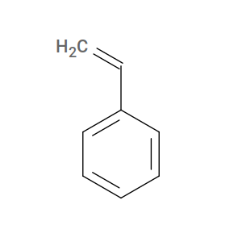

Molecular Structure Inputs¶
HTPolyNet requires molecular structures in order to generate systems. It recognizes mol2 and pdb format files, and it is up to you to make these for your system. Any mol2 or pdb file you wish to use as a monomer template should be in the ./lib/molecules/inputs/ relative to the current directory in which you issue htpolynet run or htpolynet parameterize. There are several ways to make such files from other (e.g., 2-dimensional) structural information, and we will cover two here. There are also two very important things to keep in mind when generating your molecular structure files.
The first very important thing is this: HTPolyNet requires valence-conservation when polymerizing. This means that when two atoms are identified as bonding partners (each of which is on a separate molecule, most likely), they each must own at least one sacrificial hydrogen atom that is deleted when the bond is formed, thus keeping the valence of each atom constant. We refer to the valence-conserving form of a monomer as its active form.
To illustrate how to handle this, let’s consider the simple monomer styrene. The “inactive” form of styrene is its “actual” structure:
However, for HTPolyNet, styrene’s active form is actually ethylbenzene:

So we need to generate a mol2 and/or pdb file for an ethylbenzene to use styrene as a monomer in HTPolyNet.
One way to generate mol2 files is with any one of a number of chemical “sketching” tools. For example, the ChemDoodle 2D sketcher:

Example of a Chemdoodle 2d-sketcher session for creating an input mol2 file for styrene (ahem, actually ethylbenzene).¶
Another way is to use OpenBabel’s obabel command. For example, we can use the SMILES string for ethylbenzene to tell openbabel to generate 3-D coordinates and save to a mol2 (or, alternatively, a pdb) file:
$ obabel -:"C1=CC=CC=C1CC" -ismi --gen-3d -h -omol2 -O STY.mol2
SMILES is a really great way to describe molecular structures, and it makes monomer structure generation simply a matter of expressing it as a string and using obabel to generate coordinates.
The second very important thing is that you must edit the mol2 or pdb files for your monomers. This is because HTPolyNet expects atoms that it must reference must have unique names in each type of monomer. It doesn’t matter so much what the names are, only that they are unique. And not all atoms need to be uniquely named, only the ones that HTPolyNet needs in order to make bonds happen. We will provide several examples of atom naming conventions in the tutorials.